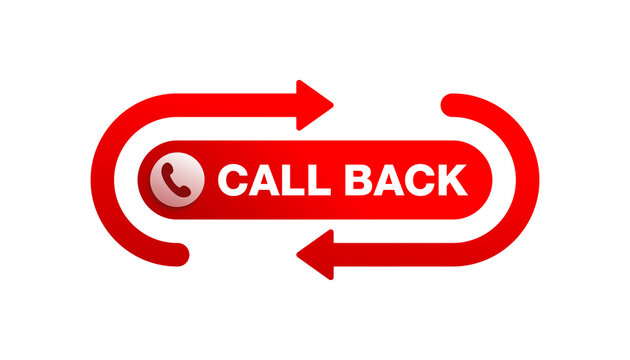

Callbacks

- Pass a function to another function as an argument.
- It is used for managing asynchronous tasks.
- It is not in use in modern JavaScript due to the callback hell problem. Promises are used in replacement of callbacks.
setTimeout takes a callback as an argument: setTimeout(function, time).
Syntax
function sum(a,b){
console.log(a+b);
}
function Calculator ( a,b , sum){ // Do not use () in function arguments
sum(a,b);
}
Uses
- When we use API calling like HTTP Request to server, we don’t want to freeze your application while waiting for the server's response.
- File handling in read operations.
- Event handling like
onclick, onLoad.
- Timer like
setTimeout, setInterval.
Advantages
-
Asynchronous Code Execution: Allows multiple operations to happen in parallel.
-
Modularity: Helps in writing modular code where logic is separated into different functions, making the code cleaner and easier to maintain.
-
Event-Driven Programming: Callbacks are central to event-driven programming, making it possible to react to user interactions or other events in real-time.
Disadvantages
-
Callback Hell
- Nested callbacks
- Difficult to read and maintain
- Error handling is difficult